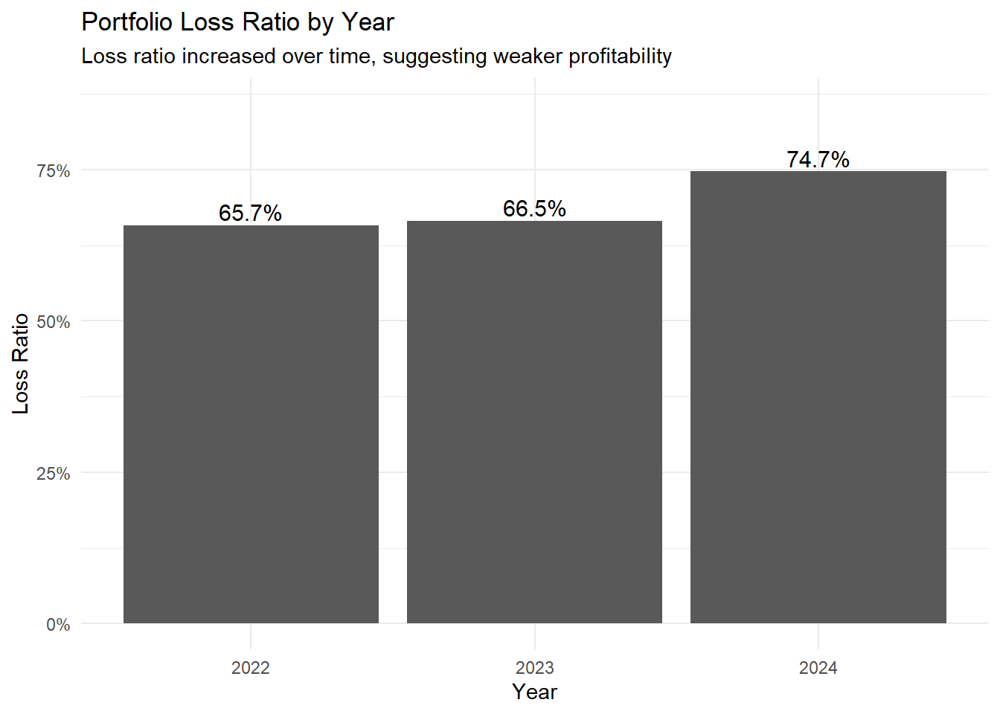
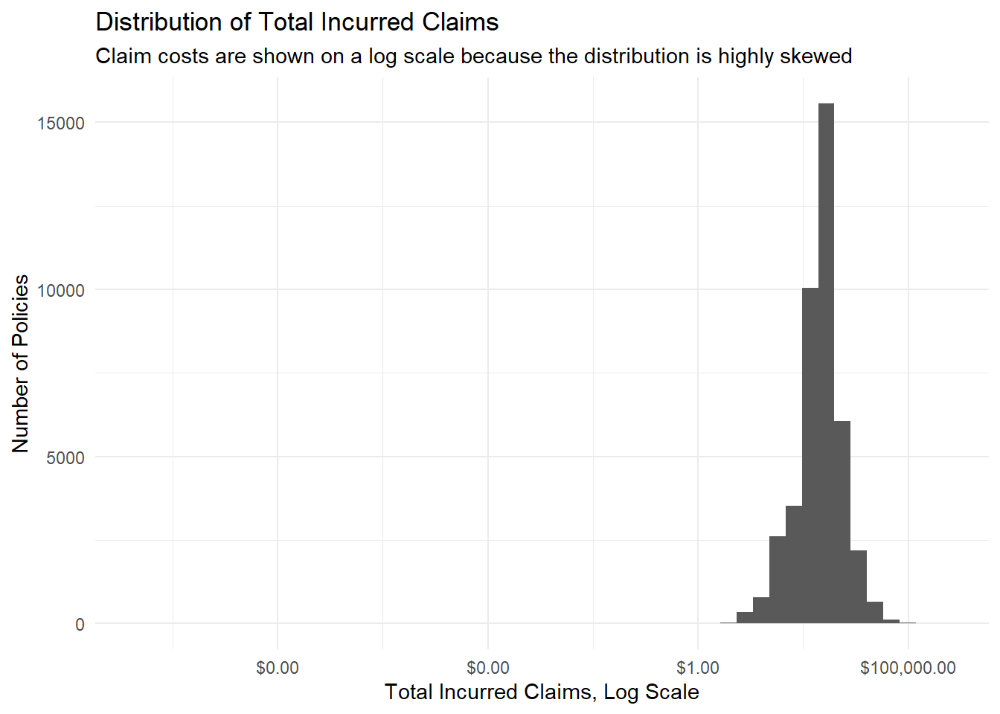

pacman::p_load(
tidyverse,
janitor,
scales,
ggthemes,
plotly,
DT,
broom
)
theme_set(theme_minimal())Take-Home_Ex01
Visual Analytics for Data Discovery: Investigating Profitability, Claim Volatility, and High-Risk Segments
1. Introduction
1.1 Background
Motor insurance is one of the major business lines in the general insurance industry. For insurers, portfolio profitability depends not only on the amount of premium collected, but also on the frequency and severity of claims. Even when the overall portfolio appears profitable, certain policyholder, vehicle, or policy segments may still generate high losses and create volatility.
In practice, insurers need to identify which customer, vehicle, and policy characteristics are associated with higher claim costs and lower profitability. Visual analytics provides a useful approach because it combines data visualization, statistical summaries, and exploratory analysis to reveal patterns that may not be obvious from aggregate figures alone.
Therefore, this study applies visual analytics techniques to a motor insurance portfolio dataset to investigate profitability, claim volatility, and high-risk segments.
1.2 Objective and Analytically Questions
The objective of this take-home exercise is to use appropriate visual analytics methods, tidyverse functions, and ggplot2 extensions to explore the profitability and volatility of a motor insurance portfolio.
Specifically, this report aims to answer the following analytically questions:
- What are the distributions of premium income, claim cost, claim frequency, and loss ratio in the insurance portfolio?
- How does portfolio profitability change across years?
- Is weak profitability mainly driven by claim frequency, claim severity, or pricing inadequacy?
- Which policy characteristics, such as policy type, policy status, business type, and payment frequency, are associated with higher loss ratios?
- Which vehicle and driver characteristics, such as fuel type, driver age, vehicle age, and vehicle value, are associated with higher claim risk?
- Are the observed visual patterns statistically supported by validation methods?
Based on the analysis, this report provides practical insights that may support insurance pricing, underwriting, and portfolio management decisions.
2. Getting Started
2.1 Setting the Analytically Tools
The tidyverse family of packages is used for data importing, wrangling, transformation, and visualization. The janitor package is used to standardize column names and check data quality. The scales package is used to format percentage and currency values in charts. The plot package is used to create an interactive visualization as an extension of ggplot2. The broom package is used to present model outputs in a tidy format.
2.2 Data Source
The dataset used in this study is a real-world motor vehicle insurance portfolio dataset from a Spanish insurance company specialized in non-life insurance. The dataset contains policy-level information, including policy characteristics, driver characteristics, vehicle characteristics, premium income, claim counts, claim costs, and exposure.
The main variables used in this analysis include total premium, total incurred claims, total claims, total exposure, policy type, policy status, payment frequency, driver age, vehicle age, fuel type, vehicle value, and circulation area.
3.Data Wrangling
3.1 Importing Data
motor_raw <- read_delim(
"data/Dataset of motor insurance portfolio.csv",
delim = ";",
show_col_types = FALSE
)
glimpse(motor_raw)Rows: 354,140
Columns: 47
$ insured_id <dbl> 1, 2, 2, 2, 3, 3, 3, 4, 4, 4, 5, 5, 5, 6, …
$ year <dbl> 2022, 2022, 2023, 2024, 2022, 2023, 2024, …
$ policy_type <chr> "COMP_E", "COMP_E", "COMP_E", "COMP_E", "C…
$ policy_status <chr> "C", "A", "A", "A", "A", "A", "A", "A", "A…
$ business_type <chr> "NB", "P", "P", "P", "NB", "P", "P", "NB",…
$ payment_frequency <chr> "A", "A", "A", "A", "S", "S", "S", "A", "A…
$ bonus_score <chr> "G", "G", "G", "G", "G", "G", "G", "G", "G…
$ driver_age <dbl> 48, 43, 44, 45, 45, 46, 47, 32, 33, 34, 39…
$ vehicle_age <dbl> 22, 24, 25, 26, 26, 27, 28, 12, 13, 14, 20…
$ age_driving_licence <dbl> 26, 19, 19, 18, 19, 19, 19, 19, 19, 19, 19…
$ fuel_type <chr> "G", "D", "D", "D", "D", "D", "D", "D", "D…
$ vehicle_value <dbl> 149511.44, 65065.12, 65065.12, 65065.12, 5…
$ seats <dbl> 4, 8, 8, 8, 7, 7, 7, 5, 5, 5, 5, 5, 5, 5, …
$ power_to_weight_ratio <dbl> 3.92, 10.15, 10.15, 10.15, 9.19, 9.19, 9.1…
$ vehicle_brand <chr> "PORSCHE", "MERCEDES", "MERCEDES", "MERCED…
$ municipality_type <chr> "I", "I", "I", "I", "I", "I", "I", "I", "I…
$ circulation_area <chr> "U", "U", "U", "U", "R", "R", "R", "R", "R…
$ total_premium <dbl> 279.5576, 546.6234, 548.7526, 584.6324, 68…
$ liability_premium <dbl> 30.60232, 114.33336, 110.66689, 122.09253,…
$ property_damage_premium <dbl> 121.9127, 303.1060, 304.9560, 305.2251, 35…
$ theft_premium <dbl> 112.361489, 80.784824, 83.521384, 107.8868…
$ fire_premium <dbl> 3.832441, 7.826861, 6.151465, 5.842892, 7.…
$ glass_premium <dbl> 8.305788, 30.091751, 32.861626, 31.101584,…
$ legal_protection_premium <dbl> 2.043622, 7.812747, 7.655637, 10.084173, 6…
$ occupants_premium <dbl> 0.4992053, 2.6679084, 2.9395659, 2.3992827…
$ total_claims <dbl> 0, 0, 1, 2, 0, 0, 0, 0, 0, 0, 0, 0, 0, 5, …
$ liability_claims <dbl> 0, 0, 1, 1, 0, 0, 0, 0, 0, 0, 0, 0, 0, 0, …
$ liability_property_claims <dbl> 0, 0, 1, 1, 0, 0, 0, 0, 0, 0, 0, 0, 0, 0, …
$ liability_injury_claims <dbl> 0, 0, 0, 0, 0, 0, 0, 0, 0, 0, 0, 0, 0, 0, …
$ property_claims <dbl> 0, 0, 0, 1, 0, 0, 0, 0, 0, 0, 0, 0, 0, 5, …
$ theft_claims <dbl> 0, 0, 0, 0, 0, 0, 0, 0, 0, 0, 0, 0, 0, 0, …
$ fire_claims <dbl> 0, 0, 0, 0, 0, 0, 0, 0, 0, 0, 0, 0, 0, 0, …
$ glass_claims <dbl> 0, 0, 0, 0, 0, 0, 0, 0, 0, 0, 0, 0, 0, 0, …
$ legal_protection_claims <dbl> 0, 0, 0, 0, 0, 0, 0, 0, 0, 0, 0, 0, 0, 0, …
$ occupants_claims <dbl> 0, 0, 0, 0, 0, 0, 0, 0, 0, 0, 0, 0, 0, 0, …
$ total_incurred <dbl> 0.000, 0.000, 233.013, 2586.361, 0.000, 0.…
$ liability_incurred <dbl> 0.000, 0.000, 233.013, 1035.000, 0.000, 0.…
$ liability_property_incurred <dbl> 0.000, 0.000, 233.013, 1035.000, 0.000, 0.…
$ liability_injury_incurred <dbl> 0.000, 0.000, 0.000, 0.000, 0.000, 0.000, …
$ property_incurred <dbl> 0.000, 0.000, 0.000, 1551.361, 0.000, 0.00…
$ theft_incurred <dbl> 0, 0, 0, 0, 0, 0, 0, 0, 0, 0, 0, 0, 0, 0, …
$ fire_incurred <dbl> 0, 0, 0, 0, 0, 0, 0, 0, 0, 0, 0, 0, 0, 0, …
$ glass_incurred <dbl> 0, 0, 0, 0, 0, 0, 0, 0, 0, 0, 0, 0, 0, 0, …
$ legal_protection_incurred <dbl> 0, 0, 0, 0, 0, 0, 0, 0, 0, 0, 0, 0, 0, 0, …
$ occupants_incurred <dbl> 0, 0, 0, 0, 0, 0, 0, 0, 0, 0, 0, 0, 0, 0, …
$ total_exposure <dbl> 0.09863014, 1.00000000, 1.00000000, 1.0000…
$ liability_exposure <dbl> 0.09863014, 1.00000000, 1.00000000, 1.0000…The dataset is imported into the R environment using the read_delim() function because the CSV file uses semicolons as separators. The glimpse() function is used to check the structure, variable types, and sample values of the imported dataset.
3.2 Checking Dataset Structure
dim(motor_raw)[1] 354140 47names(motor_raw) [1] "insured_id" "year"
[3] "policy_type" "policy_status"
[5] "business_type" "payment_frequency"
[7] "bonus_score" "driver_age"
[9] "vehicle_age" "age_driving_licence"
[11] "fuel_type" "vehicle_value"
[13] "seats" "power_to_weight_ratio"
[15] "vehicle_brand" "municipality_type"
[17] "circulation_area" "total_premium"
[19] "liability_premium" "property_damage_premium"
[21] "theft_premium" "fire_premium"
[23] "glass_premium" "legal_protection_premium"
[25] "occupants_premium" "total_claims"
[27] "liability_claims" "liability_property_claims"
[29] "liability_injury_claims" "property_claims"
[31] "theft_claims" "fire_claims"
[33] "glass_claims" "legal_protection_claims"
[35] "occupants_claims" "total_incurred"
[37] "liability_incurred" "liability_property_incurred"
[39] "liability_injury_incurred" "property_incurred"
[41] "theft_incurred" "fire_incurred"
[43] "glass_incurred" "legal_protection_incurred"
[45] "occupants_incurred" "total_exposure"
[47] "liability_exposure" motor_raw %>%
summarise(
rows = n(),
columns = ncol(motor_raw),
unique_insured = n_distinct(insured_id),
first_year = min(year, na.rm = TRUE),
last_year = max(year, na.rm = TRUE)
)# A tibble: 1 × 5
rows columns unique_insured first_year last_year
<int> <int> <int> <dbl> <dbl>
1 354140 47 185678 2022 2024The dataset contains policy-level observations across the years 2022, 2023, and 2024. Each observation represents an insurance policy record with information on policy characteristics, vehicle characteristics, driver characteristics, premium income, claim counts, incurred claim costs, and exposure.
3.3 Cleaning Column Names
motor <- motor_raw %>%
clean_names()
names(motor) [1] "insured_id" "year"
[3] "policy_type" "policy_status"
[5] "business_type" "payment_frequency"
[7] "bonus_score" "driver_age"
[9] "vehicle_age" "age_driving_licence"
[11] "fuel_type" "vehicle_value"
[13] "seats" "power_to_weight_ratio"
[15] "vehicle_brand" "municipality_type"
[17] "circulation_area" "total_premium"
[19] "liability_premium" "property_damage_premium"
[21] "theft_premium" "fire_premium"
[23] "glass_premium" "legal_protection_premium"
[25] "occupants_premium" "total_claims"
[27] "liability_claims" "liability_property_claims"
[29] "liability_injury_claims" "property_claims"
[31] "theft_claims" "fire_claims"
[33] "glass_claims" "legal_protection_claims"
[35] "occupants_claims" "total_incurred"
[37] "liability_incurred" "liability_property_incurred"
[39] "liability_injury_incurred" "property_incurred"
[41] "theft_incurred" "fire_incurred"
[43] "glass_incurred" "legal_protection_incurred"
[45] "occupants_incurred" "total_exposure"
[47] "liability_exposure" The clean_names() function from the janitor package is applied to standardise the variable names. This step makes the column names easier to reference in later data wrangling and visualisation steps.
3.4 Checking Duplicates and Missing Values
sum(duplicated(motor))[1] 0missing_summary <- motor %>%
summarise(across(everything(), ~ sum(is.na(.)))) %>%
pivot_longer(
cols = everything(),
names_to = "variable",
values_to = "missing_count"
) %>%
filter(missing_count > 0) %>%
arrange(desc(missing_count))
missing_summary# A tibble: 4 × 2
variable missing_count
<chr> <int>
1 fuel_type 1287
2 vehicle_value 513
3 vehicle_age 2
4 age_driving_licence 2A duplicate check is conducted to ensure that the dataset does not contain repeated records. Missing values are also examined for all variables. The main variables with missing values are fuel_type, vehicle_value, vehicle_age, and age_driving_licence. Since the number of missing values is small relative to the total dataset size, these observations are removed from the analytical dataset.
Handing Missing Value:
motor_clean <- motor %>%
drop_na(
fuel_type,
vehicle_value,
vehicle_age,
age_driving_licence
)
dim(motor_clean)[1] 352338 473.5 Creating Analytically Insurance Metrics
motor_clean <- motor_clean %>%
mutate(
claim_indicator = if_else(total_claims > 0, 1, 0),
profit = total_premium - total_incurred,
loss_ratio = if_else(total_premium > 0, total_incurred / total_premium, NA_real_),
claim_frequency = if_else(total_exposure > 0, total_claims / total_exposure, NA_real_),
claim_severity = if_else(total_claims > 0, total_incurred / total_claims, NA_real_)
)Several analytically variables are created to support the insurance portfolio analysis. Profit is calculated as total premium minus total incurred claims. Loss ratio is calculated as total incurred claims divided by total premium and is used as the main profitability measure. A higher loss ratio indicates weaker profitability.
Claim frequency is calculated as total claims divided by total exposure, while claim severity is calculated as total incurred claims divided by total claims. These two variables help distinguish whether poor portfolio performance is driven by frequent claims or by large claim amounts.
3.6 Grouping Driver Age, Vehicle Age, and Vehicle Value
motor_clean <- motor_clean %>%
mutate(
driver_age_group = cut(
driver_age,
breaks = c(17, 25, 35, 45, 55, 65, Inf),
labels = c("18-25", "26-35", "36-45", "46-55", "56-65", "66+"),
right = TRUE
),
vehicle_age_group = cut(
vehicle_age,
breaks = c(-1, 5, 10, 20, 30, Inf),
labels = c("0-5", "6-10", "11-20", "21-30", "31+"),
right = TRUE
),
vehicle_value_group = cut(
vehicle_value,
breaks = quantile(vehicle_value, probs = seq(0, 1, 0.2), na.rm = TRUE),
include.lowest = TRUE,
labels = c("Very Low", "Low", "Medium", "High", "Very High")
)
)Driver age, vehicle age, and vehicle value are grouped into categorical variables. This makes the visual analysis easier to interpret and allows the report to identify segment-level risk patterns more clearly.
4. Portfolio-Level Visual Analytics
4.1 Overall Portfolio Profitability
portfolio_summary <- motor_clean %>%
summarise(
number_of_records = n(),
unique_insured = n_distinct(insured_id),
total_premium = sum(total_premium, na.rm = TRUE),
total_incurred = sum(total_incurred, na.rm = TRUE),
total_claims = sum(total_claims, na.rm = TRUE),
total_exposure = sum(total_exposure, na.rm = TRUE),
overall_profit = total_premium - total_incurred,
overall_loss_ratio = total_incurred / total_premium,
overall_claim_frequency = total_claims / total_exposure,
overall_claim_severity = total_incurred / total_claims
)
portfolio_summary# A tibble: 1 × 10
number_of_records unique_insured total_premium total_incurred total_claims
<int> <int> <dbl> <dbl> <dbl>
1 352338 184724 104379210. 73410702. 76542
# ℹ 5 more variables: total_exposure <dbl>, overall_profit <dbl>,
# overall_loss_ratio <dbl>, overall_claim_frequency <dbl>,
# overall_claim_severity <dbl>The overall portfolio summary provides a baseline for the subsequent analysis. The aggregate loss ratio measures whether the portfolio is profitable overall, while claim frequency and claim severity help explain the source of insurance risk.
4.2 Yearly Trend in Loss Ratio
year_summary <- motor_clean %>%
group_by(year) %>%
summarise(
premium = sum(total_premium, na.rm = TRUE),
incurred = sum(total_incurred, na.rm = TRUE),
claims = sum(total_claims, na.rm = TRUE),
exposure = sum(total_exposure, na.rm = TRUE),
profit = premium - incurred,
loss_ratio = incurred / premium,
claim_frequency = claims / exposure,
claim_severity = incurred / claims,
.groups = "drop"
)
year_summary# A tibble: 3 × 9
year premium incurred claims exposure profit loss_ratio claim_frequency
<dbl> <dbl> <dbl> <dbl> <dbl> <dbl> <dbl> <dbl>
1 2022 18596245. 12219605. 12613 41741. 6376639. 0.657 0.302
2 2023 35125315. 23371029. 24992 82014. 11754285. 0.665 0.305
3 2024 50657651. 37820067. 38937 125317. 12837584. 0.747 0.311
# ℹ 1 more variable: claim_severity <dbl>
ggplot(year_summary, aes(x = factor(year), y = loss_ratio)) +
geom_col() +
geom_text(
aes(label = percent(loss_ratio, accuracy = 0.1)),
vjust = -0.3,
size = 4
) +
scale_y_continuous(labels = percent, limits = c(0, max(year_summary$loss_ratio) * 1.15)) +
labs(
title = "Portfolio Loss Ratio by Year",
subtitle = "Loss ratio increased over time, suggesting weaker profitability",
x = "Year",
y = "Loss Ratio"
)The yearly loss ratio shows how portfolio profitability changes over time. An increasing loss ratio indicates that claim costs are growing faster than premium income, which may suggest weaker pricing adequacy or higher claim risk.
5. Claim Distribution and Volatility
5.1 Distribution of Total Incurred Claims

ggplot(
motor_clean %>% filter(total_incurred > 0),
aes(x = total_incurred)
) +
geom_histogram(bins = 50) +
scale_x_log10(labels = dollar) +
labs(
title = "Distribution of Total Incurred Claims",
subtitle = "Claim costs are shown on a log scale because the distribution is highly skewed",
x = "Total Incurred Claims, Log Scale",
y = "Number of Policies"
)The distribution of total incurred claims is highly right-skewed. Most policies have relatively small claim costs, while a small number of policies generate very large losses. This suggests that portfolio volatility may be driven by tail-risk observations.
5.2 Distribution of Loss Ratio

loss_ratio_cap <- quantile(motor_clean$loss_ratio, 0.99, na.rm = TRUE)
ggplot(
motor_clean %>% filter(loss_ratio >= 0, loss_ratio <= loss_ratio_cap),
aes(x = loss_ratio)
) +
geom_histogram(bins = 50) +
scale_x_continuous(labels = percent) +
labs(
title = "Distribution of Loss Ratio",
subtitle = "The top 1% of loss ratios are excluded for readability",
x = "Loss Ratio",
y = "Number of Policies"
)The loss ratio distribution shows that many policies have low or zero claim costs, while a smaller group has very high loss ratios. This confirms that risk is unevenly distributed across the portfolio.
5.3 Claim Concentration and Tail Risk
claim_concentration <- motor_clean %>%
filter(total_incurred > 0) %>%
arrange(desc(total_incurred)) %>%
mutate(
claim_rank = row_number(),
claim_percentile = claim_rank / n(),
cumulative_incurred = cumsum(total_incurred),
cumulative_share = cumulative_incurred / sum(total_incurred)
)
claim_concentration_summary <- claim_concentration %>%
summarise(
top_1_percent_share = sum(total_incurred[claim_percentile <= 0.01]) / sum(total_incurred),
top_5_percent_share = sum(total_incurred[claim_percentile <= 0.05]) / sum(total_incurred),
top_10_percent_share = sum(total_incurred[claim_percentile <= 0.10]) / sum(total_incurred)
)
claim_concentration_summary# A tibble: 1 × 3
top_1_percent_share top_5_percent_share top_10_percent_share
<dbl> <dbl> <dbl>
1 0.210 0.409 0.530
ggplot(claim_concentration,
aes(x = claim_percentile, y = cumulative_share)) +
geom_line(linewidth = 1) +
scale_x_continuous(labels = percent) +
scale_y_continuous(labels = percent) +
labs(
title = "Claim Concentration Curve",
subtitle = "Cumulative share of total incurred claims by largest claim policies",
x = "Share of Claim Policies, Ordered by Claim Size",
y = "Cumulative Share of Total Incurred Claims"
)The claim concentration analysis measures how much of total incurred claims is explained by the largest claim policies. If a small percentage of policies accounts for a large share of total claims, portfolio volatility is strongly affected by tail-risk observations.